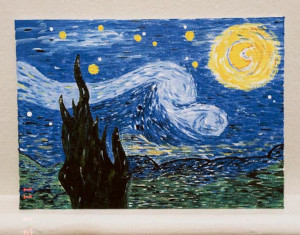

As melhores telas estão disponíveis aqui na Artes por Laura, com preços superacessíveis e uma qualidade incomparável, compre e confira o poder das telas decorativas nos cômodos do seu lar. Boas compras!
Disponibilizamos algumas telas com descontos únicos para você, não perca esta oportunidade!
Você pode adquirir qualquer produto selecionando e adiconando em seu carrinho de compras
